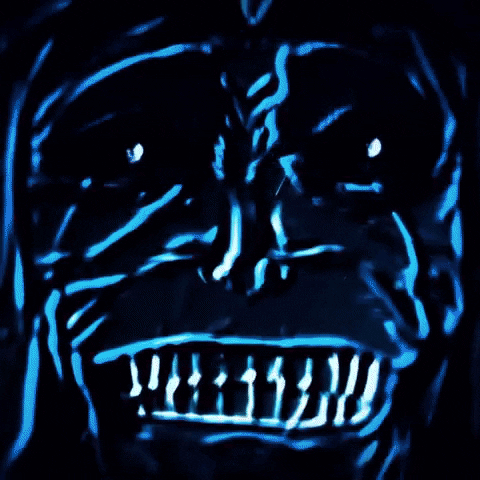

-
Inimigos
Estatua

Inimigo do qual deu inicio a toda a história de Solo Leveling.
-
Inimigos
001#Hwang Dong-Su

Um dos maiores inimigos do nosso prota, bem tarde no Manhwa Dong-Su sequestra
Jin-ho, deixando Sung Jin-Woo com muita raiva, o que o leva a matar Dong-Su, e o tranformar em uma
de suas sombras.
-
Inimigos
002#Monarca do Gelo

O monarca do gelo, um dos monarcas que vem atrás de Sung Jin Woo, para mata-lo, e
também para
destruir o mundo, mas é impedido pelo nosso protagonista.
-
Inimigos
003#Monarca das Feras

O monarca das feras, se junta com o monarca do gelo e se torna mais um dos monarcas
que vem atrás de Sung Jin Woo, para mata-lo, e também para
destruir o mundo, mas é impedido pelo nosso protagonista.
-
Inimigos
004#Monarca dos Insetos

- Monarca
- Insetos Controlados
Umas das primeiras a morrer na luta que ocorre na cidade entra Sung Jin Woo e os
monarcas, não que ela seja fraca, mas o nosso prota saí vitorioso mais uma vez.
-
Inimigos
005#Monarca das Chamas Brancas

Não teve muita relevância no Manhwa, mas foi um dos monarcas que participaram da
grande guerra, morreu no castelo demoniaco onde era o Rei.
-
Inimigos
006#Monarca dos Gigantes

Encontrado por Sung Jin Woo acorrentado dentro de um portal de Rank-S que aprece em
Nova Iorque, o Monarca dos Gigante tenta enganar Sung Jin Woo a ajuda-lo a extinguir a humanidade,
mas falha e é morto por nosso protagonista.